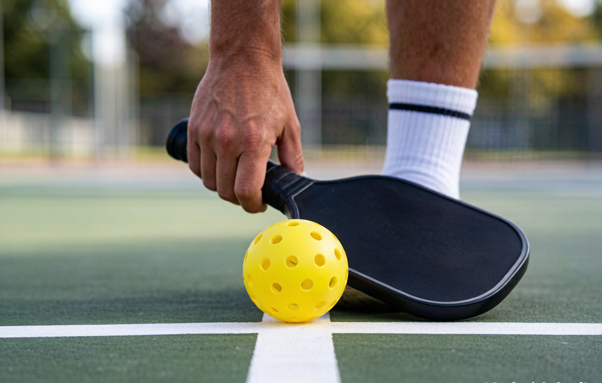

How pickleball scoring works: the 3-number system explained

Ask any beginner what they found hardest in their first week and scoring tops the list. It looks weird because doubles uses three numbers instead of two, and only one team can add points at a time. Once the logic clicks, it stops being math and becomes habit. This is the system used in recreational play across the US, straight from the USA Pickleball rulebook.
The one rule that explains everything
Pickleball uses side-out scoring. Only the team serving can score a point. If you are receiving and you win the rally, you don't get a point. You get the serve. You then have to win the next rally on your own serve to put a number on the board. This is the single fact that throws people, because most racket sports let either side score at any time.
How a game ends
A standard game goes to 11 points, and you must win by 2. If it's 10-10, play continues until someone leads by two. Tournaments sometimes play to 15 or 21, but the win-by-2 rule always holds. Most recreational open play sticks to 11.
The three-number call in doubles
Before every serve, the server calls three numbers, in this order: the serving team's score, the receiving team's score, and which server is up, either 1 or 2. So "6-3-2" means the serving team has 6, the receivers have 3, and the second server is at the line. The first two numbers work like any scoreboard. The third number is the part unique to pickleball, and it tells your partner whether the next lost rally ends your turn or just hands the ball to them.
Why the game starts at "0-0-2"
To keep things fair, the team that serves first gets only one server on the opening possession. That server is counted as server 2. After they lose the rally, it's a side-out and the other team starts fresh with server 1. From then on, each team gets two serves per turn, one per partner, before the serve moves on.
What happens when a server loses the rally
If server 1 loses the rally, the serve passes to their partner, server 2, and the score stays the same. If server 2 loses the rally, that's a side-out and the ball goes to the other team. So when you hear "10-9-1," the serving team is one point from winning but hasn't earned the two-point margin yet.
Singles is simpler
No partner means no third number. You call just two: your score, then the receiver's score. One quirk worth knowing: you serve from the right side when your score is even and the left side when it's odd. Glance at the score and you can tell which side someone is standing on.
Faults that end a rally
A fault is any rule break that stops play, and it costs the serving team the point or the serve. The usual ones:
- Hitting the ball out of bounds.
- Sending it into the net.
- Volleying while standing in the kitchen (the non-volley zone).
- Breaking the two-bounce rule by volleying the serve or the return before each has bounced once.
- Stepping on or over the baseline while serving (a foot fault).
- Letting the ball bounce twice on your side.
The kitchen and the two-bounce rule are the two that trip up new players, so if scoring feels shaky, those are the rules to review first.
A note on rally scoring
At the pro level, the PPA Tour and Major League Pickleball use rally scoring, where every rally produces a point for someone. Recreational play in the US almost always uses traditional side-out scoring. Don't worry about rally scoring until you are watching pros on TV and wondering why the score moves faster.
The word you'll hear
Getting "pickled" means losing 11-0 without scoring a point. It happens. Laugh it off and call the next serve.
The habit that fixes most confusion
Call the score out loud before every serve, even in casual play. Saying "four, two, one" forces your brain to track the game, and it stops half the arguments before they start. Channels like PrimeTime Pickleball and Pickleball Kitchen have short scoring videos if you want to watch it play out.
Your next step
Scoring is half the battle. The other half is showing up with gear that fits you. Our matcher scores 20-plus paddles against your level, style, and budget in about 30 seconds, or you can read the full guide to choosing your first paddle first.
If you would rather understand the game before you buy, start with how to play pickleball. And when someone yells "kitchen," our beginner glossary has the word and a dozen more.
getrallypick may earn a commission from partner links. It never changes our recommendations. See our disclosure.